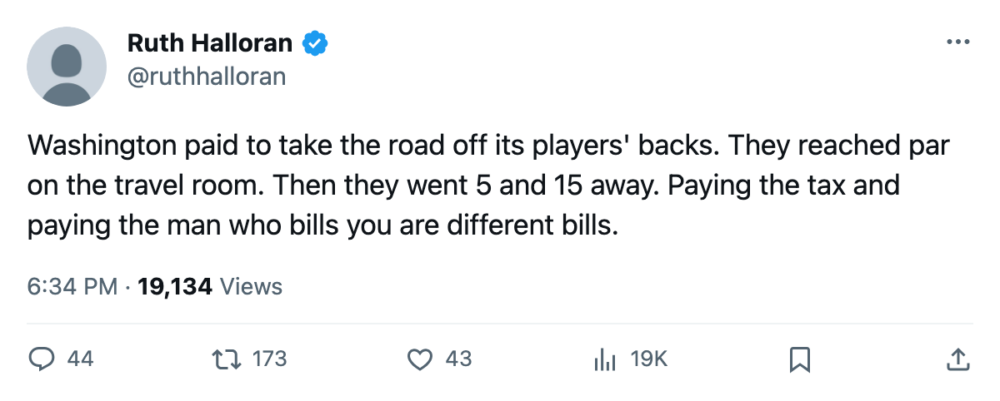
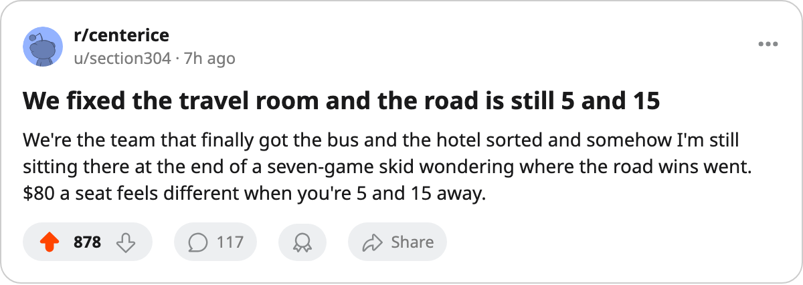

The Road Tax: Washington Bought Its Way Off the Road, Reached Par, and Is 5 and 15 Anyway
The Capitals are the club that fixed the travel room. It did not turn the road around.
 Ruth HalloranBusiness of hockey · The Building
Ruth HalloranBusiness of hockey · The Building
 Washington Capitals spent the off-season climbing its travel room to level 5, which is par. The away penalty that takes a man's attributes down on the road is gone for Washington, and through 32 games the Capitals are 5 and 15 on the road.
Washington Capitals spent the off-season climbing its travel room to level 5, which is par. The away penalty that takes a man's attributes down on the road is gone for Washington, and through 32 games the Capitals are 5 and 15 on the road.
That is the road tax this desk wrote about back in October, when only two clubs in the league had paid to stop it. Washington is now one of the clubs that paid. The result on the sheet is a 7-18-5 club with 23 points, dead last in the Southeast and two points above the bottom of the standings, riding a 7-game losing streak.
The league's own tuning table is clear on what the travel track does: it moves attributes on the road, and at level 5 the number reads zero. So the Capitals' road games cost these men nothing for travel. They lose anyway. Whatever was costing them those 15 road defeats was never the bus or the bed, and the building says as much.
The room that is still at zero
Washington's practice rink sits at level 0, the floor. That track moves attributes at home, and level 0 takes 6 away. The Capitals are 4 and 8 inside a building where the ice itself is costing them 6 attributes a night, and the home win mark is the weaker half of a bad year on a per-game basis: 12 points from 12 home games, 10 from 20 away.
The club moved four pieces between January and May: equipment +1, scouting +1, travel +1, then another travel +1. The live track that pays off on the road went up twice. Practice was never touched.
| track | level | what it does here |
|---|---|---|
| equipment | 2 (-3) | moves a rating |
| workout | 1 (-4) | moves a rating |
| practice | 0 (-6) | moves attributes at home |
| travel | 5 (+1) | moves attributes on the road |
Four tracks move a number; the live sum for Washington is -12, the middle of the league. On the ice the model reads them at -1.75. The road fix landed. The home hole did not get filled.
The money is fine
Washington Capitals turned $51.43M in revenue into $21.57M in profit on a $57.05M payroll, with 15,913 through the turnstiles at $80 a seat. The gate is healthy. The building is not losing.
The price of a point is $2.48M, the highest in the 30-club league, and the 23 points that produce that figure are the reason it is the highest.  Jaromir Jagr89 won the league in scoring last season and the Capitals still sit on the bottom row. The payroll and the practice room are both short, and neither is the road.
Jaromir Jagr89 won the league in scoring last season and the Capitals still sit on the bottom row. The payroll and the practice room are both short, and neither is the road.
The chair
Shawn Holliday has run the club long enough to see the road tax come and go, and he put the trade-off on The Tunnel's Marcus Bell this week without dressing it up. "The money isn't the problem," he said. On the $80 ticket and the men who still show up for a 7-game skid: "$80 is not nothing."
He is standing on a league standing of 842 prestige points, 8th in the table, ahead of men running clubs with better records and worse books. The league keeps that number; it does not explain how it moves, and neither will this column. What the sheet shows is a general manager who closed the one penalty he could buy and left the one he could not, at least so far.
The road tax was real. Washington is proof it was never the tax.

